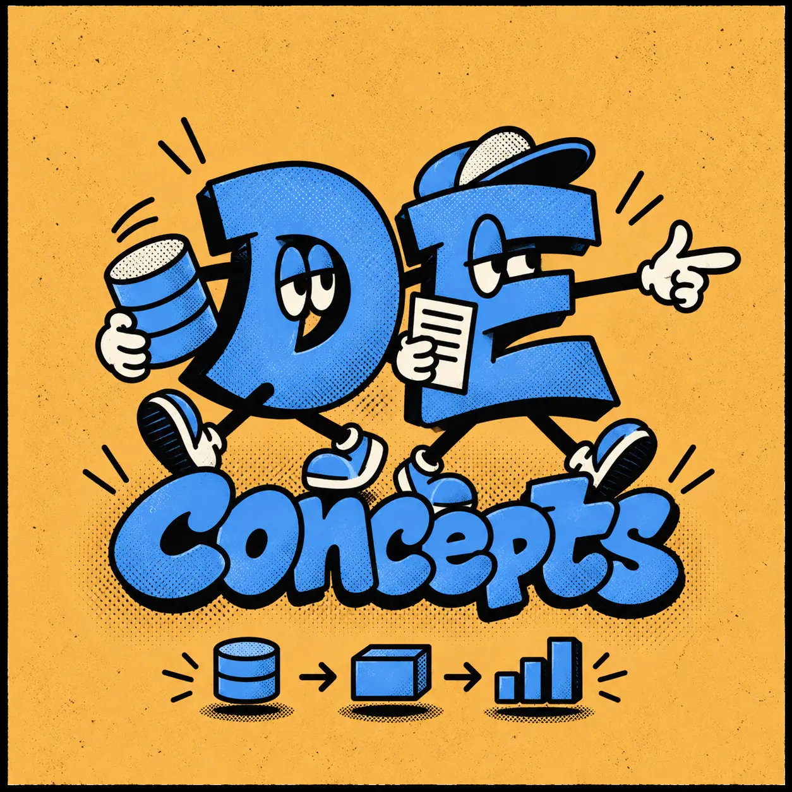

Educational podcast about
the world of
Data Engineering
Learn how databases, pipelines, frameworks, and tools fit together through clear, practical explanations designed for listening on the go. No screen required.
Subscribe and start learning.
Latest episodes
Loading episodes…
About the author
Dmitrii Polovinkin is a data engineer with nearly seven years of experience across logistics, fintech, telecom, and retail.
The podcast draws on real projects and a personal knowledge base built over years of learning. Every episode is researched, written, and narrated by Dmitrii — not generated by AI.
What the episodes cover
Each episode focuses on one data engineering concept, database, framework, or tool.
You’ll learn what it is, why it exists, where it fits, how it works, and what is worth remembering for real work and interviews.
Who it’s for
Data engineers who want stronger foundations, plus data scientists, ML and AI engineers, DevOps engineers, and backend developers who work with data systems.
It’s also for anyone preparing to enter data engineering and build practical, interview-ready understanding.